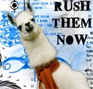

Forums galactiques > Taverne galactique : lieu de discussion informel > IZakaYa - L'alcool encore et toujours...
Pages : 1 2 ... 274 275 276 ... 308 309
| Lama Sutra Réputation à la taverne : 18  21/02 ETU 04:23 | Score : 1 Détails Lama Sutra n'en pouvait plus ...
Depuis que Galactor avait pris cette bouteille dans la main droite, sa main directrice, il voulait pouvoir rester calme, et ne pas avoir de crise, mais il savait qu'il ne pouvait ouvrir la bouche sans que sa lui arrive, dans un tel état d'excitation ! Il ne pouvait que dire ; Bfu.. bvu ... blu ... bubububububu... baebibobu... boububibou... Puis il ouvrit la bouche, et avant que le moindre son n'ai le temps de sortir, son visage fut transformé par une atroce grimace, pathétiquement ridicule. Et alors là, d'ailleur je sait pas comment il a fait, mais vous voyez à peut près la trajectoire d'une balle rebondissante qu'on aurait lancé de toute ses forces contre un mur ?! Syouuuuuuuu POK uuuuuuuuuu POK uuuuuuuuiiiiiiiii POK iiiiiiiiiiiiii POK iiiiiiii ... ... etc ... ... Bah sa Lamaserie eu la même trajectoire ! Sauf que lui c'est un lama !! Sa casse encore plus de verres !! Et tout le long de cette exploit il hurla ; BUUUUU FAAAAAAA LOOOOOOOOOOOOOOOOOOOOOOOOOOOOO | ||
| Araskel Réputation à la taverne : 396  21/02 ETU 13:06 | Score : 2 Détails Vetu de son nouveau tablier 'support your local, GISAP!" , Araskel servait les clients, tout en admirant le thermo de Galactor en se disant que lui offrir un tel artefact n'était peut etre pas une bonne idée... en tout cas, il se dit que les Lamas, s'était pire que les chats alcoolique...
"Merde! la collection de verres godemichés a lampe allogene suggestive de Grabeuh! ca coute une fortune ces joujous protoss!" | ||
| Groochie Réputation à la taverne : 709  21/02 ETU 13:21 | Score : 0 Détails " il se dit que les Lamas, s'était pire que les chats alcoolique"
Et fiere de l'etre!!!!!!! | ||
| Rudrig Del Fortuna Réputation à la taverne : 23  26/02 ETU 20:01 | Score : 0 Détails Rudrig entra précipitement dans l'IzakaYa. Il pleuvait des trombes d'eau à l'extérieur et le commandant éspérait pouvoir trouver un peu de chaleur dans ce bar si réputé.
Malheursement, l'endroit était peu à peu déserté depuis quelques temps, et en particulier depuis le début du Rallye. Il s'assit quand même et se commandat à boire, espérant voir arriver quelques ames chaleusereuses. | ||
| Blackwood Réputation à la taverne : 18  26/02 ETU 20:41 | Score : 1 Détails Blackwood entra, vêtu d'un simple blouson de cuir, et il était complètement trempé. Il alla de son pas claudiquant, sa canne marquant chaque enjambée, et s'assit à coté de Del Fortuna. Il commanda un vin chaud qu'il commença à boire lentement.
Bonsoir, Del Fortuna. Sale temps, n'est-ce pas? | ||
| El matadore Réputation à la taverne : 0  26/02 ETU 21:10 | Score : 0 Détails une biere garcon
| ||
| Araskel Réputation à la taverne : 396 26/02 ETU 21:21 | Score : 0 Détails Araskel s'ennuyait ferme.L'arrivé impromptu de clients lui fit le plus grand bien, les blattes n'étaient pas trop bavarde ces temps ci, ca devait etre le temps...
Il servit rapidement les clients, les verres étaient plus remplit que d'habitude, ils pouvaient a l'occasion etre genereux... Il se tourna vers les clients et se mit a les obsevé en silence. Enfin un peu d'animation a l'Izakaya se dit il. | ||
| Groochie Réputation à la taverne : 709 26/02 ETU 21:25 | Score : 0 Détails Groochie arriva près d'Araskel et lui mit une grande claque dans le dos :
"Ça va vielle branche??" | ||
| Rudrig Del Fortuna Réputation à la taverne : 23 26/02 ETU 22:35 | Score : 0 Détails Rudrig levat les yeux précipitament d'un livre qui avait l'air de le passioner et regarda son sombre interlocuteur
"Excusez moi, j'étai trés pris par ces histoires d'une autre époque. Oui, ce temps me rappel une légende parlant d'une tempete s'abbatant tous les dix ans dans ce coin de la galaxie. Certains mistiques parlent d'esprits de guerriers morts au combat... enfin bref. C'est la premiére fois, je pense, que je vous croise dans ces lieux, quel bon vent vous améne ici?" | ||
| Grabeuh Réputation à la taverne : 1675  27/02 ETU 13:35  | Score : 1 Détails Pouah !
Un protoss entra Moi, Grabeuh le grand, l'immense, le titanesque, je veux un thé à la menthe ! le VRAI Grabeuh entra Pardon, ceci est un abruti, je vais le castrer, et je reviens. Araskel, mets moi une bière sur le comptoir en attendant steuplait ! | ||
| FLAMUS NIARK Réputation à la taverne : 25  27/02 ETU 13:42 | Score : 0 Détails Je viens vous présenter mon animal de companie
ZLong qui est un petit zergling de 5 mois ,n'est t'il pas mignon ? zling zling ...ail euh couchez !Ah ,il mord un peut ,niark ail. | ||
| Grabeuh Réputation à la taverne : 1675 27/02 ETU 13:47 | Score : 1 Détails Grabeuh fut prit d'un réflexe vieux de plusieurs millénaires.
Le zergling est l'ennemi naturel du protoss, et le protoss est bien mieux armé que le zergling... Mettez un Pitt-bull en présence d'un chat et admirez le résultat, vous pourrez imaginez la chose, avec 170 kilos de protoss armé jusqu'aux dents et 80 kilos de zergling, armé uniquement de SES dents... Grabeuh finit par porter la tête de la pauvre bête sur un bâton taillé en pique, et donna un oeuf de zerg à Flamus pour s'excuser de la mort du zergling. Pardon, un réflexe conditionné... Un zergling... J'ai pas pu résister... | ||
| FLAMUS NIARK Réputation à la taverne : 25 27/02 ETU 13:50 | Score : 0 Détails Ouinnn mon pauvre petit zerlingg !!!
Comment tu m'a donné un oueuf de hydralisk à la place... Je te pardone alors !niark | ||
| Blackwood Réputation à la taverne : 18 27/02 ETU 18:47 | Score : 1 Détails Après un long silence, Blackwood se décida enfin à répondre à Del Fortuna:
Excusez-moi, je suis un peu fatigué. Effectivement, je ne crois pas vous avoir déjà vu. En fait, c'est la première fois que je mets les pieds ici. Charmant endroit. | ||
| Grabeuh Réputation à la taverne : 1675 27/02 ETU 19:50 | Score : 1 Détails Charmant, effectivement. Je m'efforce tous les jours de le garder en bon état, et même lorsque certains énergumènes viennent, armés de pinceaux de toutes les couleurs en hurlant vouloir repeindre l'endroit en vert, je me débrouille toujours pour faire en sorte que cet endroit garde la classe et le standing qu'il se doit d'avoir.
Au fait, je ne pense pas vous connaitre, mon cher. A qui ai-je l'honneur ? | ||
| Blackwood Réputation à la taverne : 18 27/02 ETU 19:56 | Score : 0 Détails Edward Blackwood, gouverneur de In Sorte Diaboli. Je viens d'arriver dans l'Assemblée, c'est mon premier passage dans la taverne, également. J'ai vu un commandant portant un bicorne avec une cocarde qui vient ouvert un restau', mais je n'y suis pas encore allé.
Vous, vous êtes Grabeuh, le protoss le plus connu de d'Origine, et apparemment le seul aussi, d'ailleurs. Très honoré. A part ça, je ne sais pas grand chose sur vous. Des gens viennent repeindre cet endroit en vert, dites-vous? Ne serait-ce pas plutôt en rouge ou même en noir? | ||
| Groochie Réputation à la taverne : 709 27/02 ETU 20:18 | Score : 1 Détails "Allez les verts!!!!!!!!"
Sur ces mots Groochie s'en allat en courant, creignant la fureure du gros Protoss qui sent mauvais. (dsl ^^) | ||
| Blackwood Réputation à la taverne : 18 27/02 ETU 20:23 | Score : 0 Détails Blackwood regarda, incrédule, Groochie entrer, balancer une phrase et ressortir très vite.
Il sont tous comme ça, ici? | ||
| FLAMUS NIARK Réputation à la taverne : 25 27/02 ETU 20:29 | Score : 0 Détails Le niark s'approcha de Blackwood avec un pot de peinture vert.
Faut le repeindre en vert !!! Et il jeta le pot de peinture sur l'individu avant de s'enfuir. | ||
| Groochie Réputation à la taverne : 709 27/02 ETU 20:32 | Score : 0 Détails Groochie pris sa grosse queue (bah quoi?? Je suis un chat.....) et renvoya le pot de peinture sur Araskel qui roupillait.
|
Pages : 1 2 ... 274 275 276 ... 308 309
Forums galactiques > Taverne galactique : lieu de discussion informel > IZakaYa - L'alcool encore et toujours...